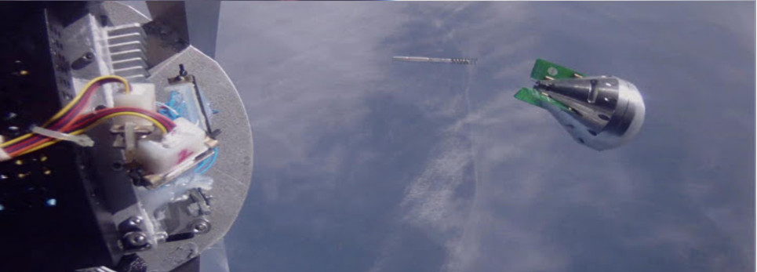

Hello there! I'm Maurice Woods - Physicist and space junky from Northern Colorado. Born in California and raised in Southern Colorado, I've spent the past six years of my life devoted to becoming the best, most well-rounded scientist I can, while honing my practical skills in mechanical, electrical, and systems engineering.
I have compliled a portfolio of my notable projects and skills in the hopes that you might find something interesting! If, by chance, you'd care to contact me, consider my contact information below:
Here you will find an overview of several projects in which Maurice has been involved over the past few years. Click on each header to expand its contents and be sure to check out any links that may provide extra information on the various programs (e.g. Rocket Sat) and companies (RoadNarrows Robotics) with which I've worked.
nanosatellite missions2016
UNP MAXWELL CubeSat Mission
X-Band Reflectarray and CDMA Demonstration Bus
2016
QB50 Challenger CubeSat Mission
Ion-Neutral Mass Spectrometer 2.5U Science Bus
sounding rocket science payloads2011
Rocket Sat-X Sounding Rocket Payload
Characterizing Dynamics Of Reentry On A Vehicle

The Rocket SAT-X program allows for deployable out of the rocket (once the rocket reaches an apogee of 160km). The ReEntry Experiment (ReX) Capsule was designed to be jettisoned from the rocket body, where it reentered the earth's atmosphere while taking large amounts of inertial-dynamic data relating to the amount of air resistance experienced by the vehicle body. The payload was required to survive the violent reentry process, terrestrial impact, and was to be recovered from the Atlantic Ocean several hours after launch. This project launched in August of 2011.
View the ReX team's submission to the 2012 Colorado Space Grant Space Symposium here
weather balloon science payloads2010
Sun Spectro Sat
Understanding Appearance Of Fraunhaufer Spectral Lines With Respect To Altitude
Sun Spectro Sat (SSS; by Maurice Woods, Motoaki Honda, and Sara Gray) is a high altitude spectrometer payload designed to collect data concerning the absorption of solar light by the Earth's atmosphere at different altitudes. This project was done as a part of the Frontiers of Science Institute (FSI) UNC Undergraduate research opportunity, where high school students Sara Gray, Jim Wiley, and Erik Travis joined the UNC undergraduate students for these demo sat launches
2008
Go Green! Sat
Exploring Energy Recapturing Techniques for Tumbling Payloads
autonomous electromechanical systems2016
Hungry Hungry Hippo Challenge
Robot built to collect and shoot ping pong balls through hoops
Color schlieren imaging with a two-path, double knife edge system
The traditional arrangement for visualizing optical phenomena with the schlieren technique is modified to include a Mach-Zehnder geometry. This allows for the implementation of two independent knife edges along two different beam paths, resulting in an enhanced combined image that is uniquely adjustable. Post-processed combined images are also generated by spatially separating the paths from each arm and then colorizing and combining the images into a single composite. In this way, bidirectional, color schlieren images have been produced using both white-light and monochromatic sources.